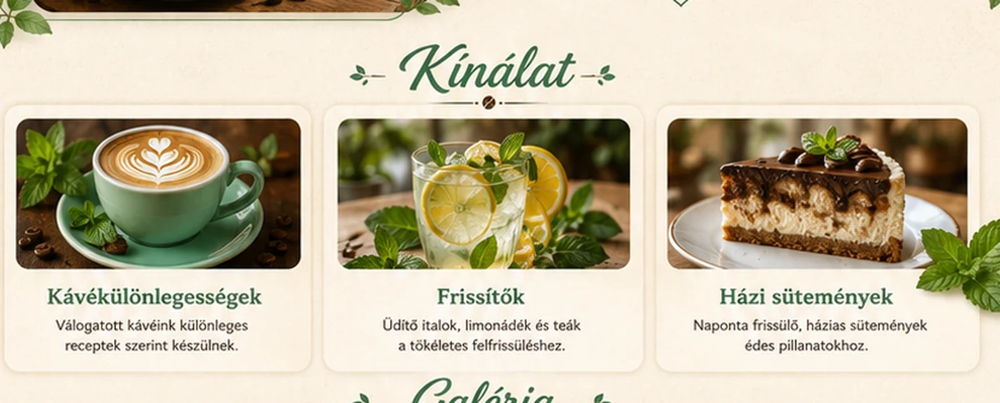
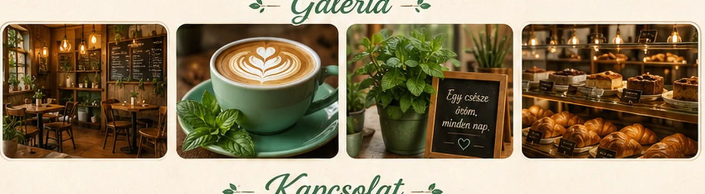

🌿
Friss ízek
Minőségi alapanyagok és üde, szezonális választék.
Friss ízek, gondosan elkészített kávék és kellemes hangulat egy helyen.
Minőségi alapanyagok és üde, szezonális választék.
Gondosan válogatott kávék, szeretettel elkészítve.
Barátságos tér, ahol jó megállni és feltöltődni.

A Menta Kávézó egy barátságos hely, ahol a minőségi kávé, a friss ízek és a nyugodt hangulat találkozik.
Három ízvilág, amely miatt érdemes újra és újra visszatérni.

Selymes tejhab, lágy kávé és egy finom, frissítő mentaillat.

Kávék, limonádék és házi finomságok minden napszakra.

Meleg fények, friss illatok és egy asztal, ahol jó együtt lenni.